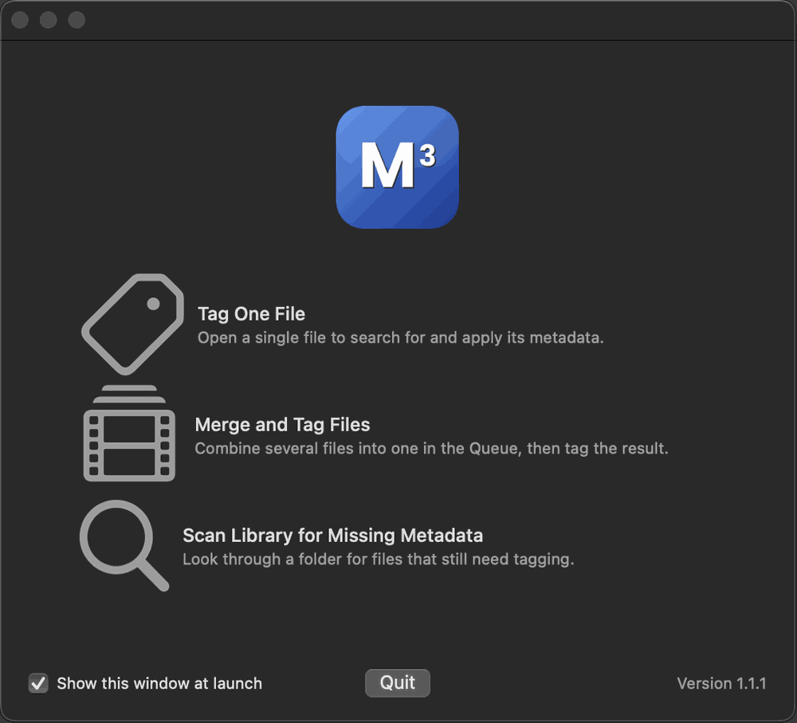

On the Welcome window choose Tag One File, or use File → Open… and pick a video.
In the editor, click Search Metadata in the toolbar. Do not skip this step — a file saved with no title tagged keeps its original name.
Pick the best match from the results. Title, description, cast and artwork appear on the right.
Click Save, or Save & Close to finish in one click.

The Welcome window. Choose Tag One File to tag a single file.The Editor. Search Metadata is in the toolbar.
Good to know: the file is changed in place and then moved into your Ready for Media Library folder. M3 does not keep the original and nothing goes to the Trash. If you may want the old version back, copy the file first.